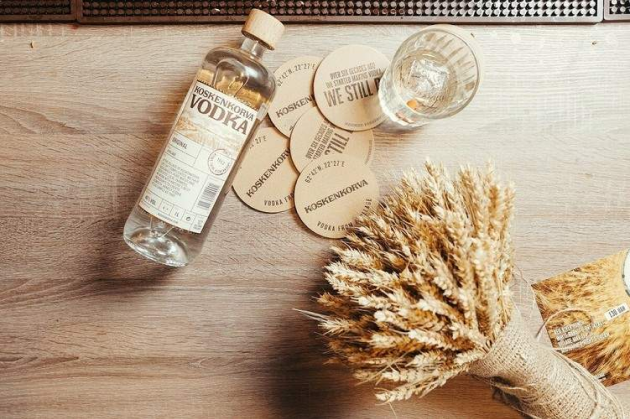
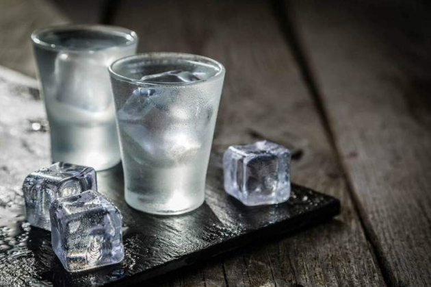

Водка
Водка — это исконно русский народный напиток. Но даже у водки есть чрезвычайно редкие экземпляры. Например, экспериментальная безпохмельная водка, над разработкой которой работали ученные в СССР.
Наша компания специализируется на покупке различных спиртных напитков – дорогих, дешевых, лимитированных, коллекционных, винтажных и раритетных – у населения. В том числе мы приобретаем водку.
Скупка водки производится по ценам, которые близки к международным аукционным. Поэтому мы гарантируем выгодность сделки. По сути, ни в Москве, ни в Санкт-Петербурге, ни в России нет других скупающих элитный алкоголь компаний, которые предлагают даже сравнимые с нашими цены.

Что такое водка?
Водка – крепкий алкогольный напиток, содержащий 40% спирта. Наиболее известна в России, постсоветских и восточноевропейских странах. Современное производство подразумевает просто смешивание воды и спирта, однако ранее для изготовления водки использовался процесс дистилляции растительного сырья (как правило, пшеницы, но в некоторых случаях также овса, ржи или картофеля).
Водка считается «национальным русским» спиртным напитком. Это неудивительно. В стране производится около 790 миллионов литров этого напитка ежегодно. Около 30% этого количества отправляется на экспорт. Тем не менее, основная масса производимой в России водки относится к классам «эконом» (однократная фильтрация спирта), «стандарт» (многократная фильтрация спирта) и «премиум» (многократная фильтрация спирта и воды). А по-настоящему люксовые марки принадлежат производителям из Европы и Северной Америки.

Правда, из-за простоты непосредственно производства водки люксовые марки, относящиеся к классам «суперпремиум» и «ультрапремиум», по вкусовым характеристикам мало отличаются от премиальных. Так, например, многие бренды предлагают фильтрацию через драгоценные металлы, камни, специально очищенную воду и так далее. Такие напитки интересны в первую очередь коллекционерам, поскольку выпускаются в лимитированных количествах.
Поэтому, если у вас есть водка – не стоит торопиться открывать бутылку. Вкус и чистота напитка всё равно вряд ли впечатлят. Зато он может пополнить семейный бюджет. И вы можете продать водку нашей компании. Мы приобретаем элитные напитки по выгодной цене, быстро и профессионально.
Как проходит скупка водки в России
Для экономии времени – и вашего, и нашего – выкуп водки производится с предварительной дистанционной оценкой. Поэтому, если у вас есть бутылка дорогого, элитного напитка, который вы хотите продать – просто отправьте нам её фотографии. А мы пришлём в ответ предварительно рассчитанную стоимость.
Если стоимость вас устроит – то по телефону или по What’s App мы договоримся о том, как пройдёт процедура выкупа. Наша компания имеет филиалы в Санкт-Петербурге и Москве. Приглашаем к нам в офис по предварительной записи. Ну а если вы житель других населенных пунктов Российской Федерации или соседних стран СНГ, мы можем обсудить варианты дистанционного проведения всей процедуры по продаже.
Какие сорта водки мы покупаем
Наши опытные специалисты проводят оценку алкоголя онлайн. Для того чтобы узнать, сможете ли вы продать
нам конкретную бутылку, вам необходимо сфотографировать ее с разных ракурсов, включая этикетку напитка.
Снимки должны быть чёткими и высокого качества, с возможностью хорошо рассмотреть этикетку.
Какие элитные марки водки существуют
Наши опытные специалисты проводят оценку алкоголя онлайн. Для того чтобы узнать, сможете ли вы продать
нам конкретную бутылку, вам необходимо сфотографировать ее с разных ракурсов, включая этикетку напитка.
Снимки должны быть чёткими и высокого качества, с возможностью хорошо рассмотреть этикетку.